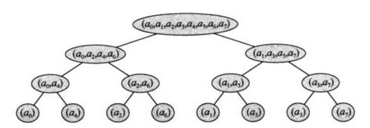

简介
快速傅里叶变换(Fast Fourier Transform),简称FFT
OI中主要要来加速多项式乘法
声明
预备知识：实数，虚数
定义n=第一个多项式最高次+1，m=第二个多项式最高次+1
以$(4x^3+5)\times (x^2-6x+\sqrt3)$为例n=4，m=3
转化
对于x的多项式可以转化为对于x的函数f(x)
函数f(x)有两种表达方式：系数表达法和点值表达法
系数表达法
最常见的表达方式$f(x)=a_0x^0+a_1x^1+…+a_{n-1}x^{n-1}=\sum_{j=0}^{n-1}a_j x^j$
点值表达法
原理：假设f(x)的最高次数为n−1，那么我们只要知道了n个不相同的x及f(x)值，就能确定出f(x)的多项式。
例如确定一个二次函数需要三个不同的点，因为有三个变量
那么要得到多项式乘积对应的函数，需要$(n-1)+(m-1)+1=n+m-1$个点
函数的加法运算
对于系数表达法，各项系数对应相加
对于点值表达法，x相同的点y值相加
例如：
$A(x)=x^2+2x-1$可以被表达为$(0,-1),(1,2),(2,7)$
$B(x)=x^2-x+2$可以被表达为$(0,2),(1,2),(2,4)$
$C(x)=A(x)+B(x)=2x^2+x+1$可以被表达为$(0,1),(1,4),(2,11)$
两者势均力敌
嗯这个并不会用到，毕竟我们要解决的是多项式乘法
函数的乘法运算
对于系数表达法，将前面的每个项依次与后面的每个项乘机之和，时间复杂度$\Theta(n\times m)$
对于点值表达法，x相同的点y值相乘，时间复杂度$\Theta(n+m-1)$
例如：
$A(x)=x^2+2x-1$可以被表达为$(0,-1),(1,2),(2,7),(3,14),(4,23)$
$B(x)=x^2-x+2$可以被表达为$(0,2),(1,2),(2,4),(3,8),(4,14)$
$C(x)=A(x)\times B(x)=x^4+x^3-x^2+5x-2$
可以被表达为$(0,-2),(1,4),(2,28),(3,112),(4,322)$
可以发现A(x)和B(x)一定要取足够多（即n+m-1个）点
这就是快速傅里叶变换的精髓：利用点值表达法比系数表达法在乘法中更快
思路
引入新定义：
求值：通过多项式的系数表示法求其点值表示法。
插值：通过多项式的点值表示法求其系数表示法。
显然上面两个定义是互逆的关系。
方法：引用别人的一幅图，灰常清晰（如果图没了就算了）

FFT
FFT就是用来解决求值的过程的，可以在$\Theta(nlogn)$的时间里完成DFT
分析一下如何得到最终的多项式吧。
- 求A的n+m-1个单位根的点值，求B的n+m-1个单位根的点值。
- 点值相乘，得到C的点值。
- 计算C的多项式。
步骤2可以直接$\Theta(n+m-1)$得出，重点是步骤1和3
单位根
中途插叙这个数学上的概念，有点难，要挺过去。
复数，就是实数+虚数，两者只能和同类型的运算，符号$i$表示是一个虚数，$i\times i=-1$
n次单位复数根，就是满足$\omega^n=1$的复数值$\omega$(念omega)
在实数范围下，满足所有n的有1，对于偶数n还有-1，然鹅在复数范围下$\omega$将更加广泛。
下文的n和这道题的n暂时无关。
单位根性质-简单
- n次单位复数根恰好有n个，标号k从0到n-1
- 预备知识$e^t=cos(t)+sin(t)i$，注意cos是实数sin是虚数
- $\omega_n^k=e^{ \frac{k}{n}2\pi } i$，是值的定义，用于推性质
- $\omega_n^k=cos(\frac{k}{n}2\pi)+sin(\frac{k}{n}2\pi)i$，是值的具体体现，用于代码实现
- 递推式：$ \omega_n^k=\omega_n^{k-1}\times \omega_n^1 $
单位根性质-复杂
消去引理：$\omega_{dn}^{dk} = \omega_n^k$
这是利用定义得出的（因为指数是个分数，所以一样）
推论：$\omega_{n/2}^{n} = \omega_2^1 = -1和1中的第一个=-1$，等下会用到。
折半引理：$(\omega_n^{k+n/2})^2=(\omega_n^k)^2 $
证明：
$$
\omega_n^{k+n/2} )^2
=\omega_n^{2k+n}
=\omega_n^{2k}\times \omega_n^n
=\omega_n^{2k}\times 1
=\omega_n^{2k}=(\omega_n^k)^2
$$
至于其他定理和性质，因为本文不需要就不讲了，有兴趣的自行百度就好。
离散傅里叶变换DFT
离散傅里叶变换(Discrete Fourier Transform)，简称DFT。
为了方便，暂时将n设为需要带入的点数，不同于声明中的的n
我们的目的就是从系数得到点值表示法，已知需要代入n个点
DFT的实质就是对一个多项式在n次单位根上求值，利用单位根的性质加速。
$$ f(x)=\sum_{j=0}^{n-1}a_jx^j $$
求出x在$\omega_n^0, \omega_n^1, \omega_n^2…\omega_n^{n-1}$
(即n个n次单位复数根)的y值，时间复杂度$\Theta(n^2)$。
$$
DFT(k)
=y_k
=f(\omega_n^k)
=\sum_{j=0}^{n-1}a_j(\omega_n^k)^j
=\sum_{j=0}^{n-1}a_j \omega_n^{jk}
$$
回到FFT-求值
经典的分治又来了，也终于到正文了……
它的神奇之处在于利用了n 次单位根的一些玄学性质，
然后利用分治大大加速计算。
首先假设n是偶数，然后将偶数奇数下标分离
$Q(k)=a_0+a_2\times k+a_4\times k^2+…+a_n\times k^{n/2-1}$
$W(k)=a_1+a_3\times k+a_5\times k^2+…+a_{n-1}\times k^{n/2-1}$
易得$A(k)= Q(k^2)+k\times W(k^2)$
所以，
求$A(k)在k=\omega_n^0, \omega_n^1, \omega_n^2…\omega_n^{n-1}$处的值就转换成为
求$Q(k)和W(k)在k=(\omega_n^0)^2,(\omega_n^1)^2,(\omega_n^2)^2…(\omega_n^{n-1} )^2$处的值
当然这样只是相当于展开，是时候利用单位根的性质了。
$对于k< n/2，A(\omega_n^{k})=Q((\omega_n^{k})^2)+\omega_n^k\times W((\omega_n^{k})^2)$
$对于k\geq n/2，A(\omega_n^{k+n/2})=Q((\omega_n^{k+n/2})^2)+\omega_n^{k+n/2}\times W((\omega_n^{k+n/2})^2)$
根据折半引理$(\omega_n^{k+n/2})^2=(\omega_n^k)^2$再次简化（主要是减少了带入次数）
$(\omega_n^{k+n/2})^2=(\omega_n^k)^2$
$Q(\omega_n^{k+n/2})=Q(\omega_n^k)$
$W(\omega_n^{k+n/2})=W(\omega_n^k)$
$\omega_n^{k+n/2}=\omega_n^k \times \omega_n^{n/2}=\omega_n^k \times -1=-\omega_n^k$
$对于k\geq n/2，A(\omega_n^{k+n/2})=Q((\omega_n^{k})^2)-\omega_n^k\times W((\omega_n^{k})^2)$
边界：$\omega_1^0=1$
对了，有木有一种熟悉感？没错，等比数列二分求和的快速也是靠这个分治减少带入计算量！
回到FFT-插值
从x、y得到系数也就是插值又要怎么搞呢？
丢个结论（额证明我也不会）：
用$\omega_n^{-1}$的值代替$\omega_n^1$，根据递推式从而让所有的$\omega$都不同
最后再将答案除以n，得到的便是逆DFT的结果。
再理理思路
如果n是2的幂，一路分治下去，时间复杂度$\Theta(nlogn)$……
如果n不是2的幂怎么办？很简单，强制取更多的点（并且是2的幂个），多项式前面的系数补0。
综上所述，找到比n+m-1更大或相等的2的幂作为n
讲一个重要的细节：$A(k)= Q(k^2)+k\times W(k^2)$这个公式在代码里的体现是将平方拆开也就是n/2传给所谓Q、W（FFT）的，所以看起来没有平方
讲一道模版题
FFT基本上就讲完了，但都是理论做法，下面结合例题来看。
Caioj1449多项式乘法
其实本文一直在解决这个问题。
递归版代码
因为是递归，分治时n一直在变
首先确定：
当op=1也就是求值时
进入函数时f[i]表示将被带入的多项式的系数（n个）
结束函数时f[i]表示代入n次单位负数根第i个得到的值（n个）
当op=-1则相反
|
|
优化
递归实现FFT的做法容易爆栈，而且时间较长。
给出两种解决方案：递归但不在函数里开数组、非递归
递归版代码2（个人独创版）
|
|
想要非递归？
递归实现FFT的做法容易爆栈，而且时间较长。
提示：找偶数奇数分治后的结果编号规律

原本0(000) 1(001) 2(010) 3(011) 4(100) 5(101) 6(110) 7(111)
最终0(000) 4(100) 2(010) 6(110) 1(001) 5(101) 3(011) 7(111)
可以发现 不断偶数奇数分离后 每个数和他二进制相反的位置互换！！
通俗点讲就是对于位置i，应当存放原位置是二进制翻转后的i的数值。
（也有的博客称其为其数值来自的位置的翻转是递增的）
接下来就是预处理出i对应的翻转值了，有这样一个优美的方法：
FFT中：
其实归根结底就是把递归中调用自己的部分的前面部分即偶数奇数分离预处理出，而后再层层合并上去。
非递归版代码
|
|
卷积
最后再提提这个其实最重要的概念
请牢记它，很多FFT的题目都需要将公式转化为这样
A、B、C都是系数
$C_i=\sum_{k=0}^i A_k \times B_{i-k}$
推荐好文章
精品：
位于CSDN-心若为城
位于CSDN-iamzky
位于百度云-Rose
位于百度文库-Voiphon
位于CSDN-oiyangyuhao
位于博客园-Neroysq
miskcoo
1-位于CSDN-ACdreamers
2-位于CSDN-ACdreamers
快速复习（考前适用）
函数的乘法运算
对于系数表达法，将前面的每个项依次与后面的每个项乘机之和，时间复杂度$\Theta(n\times m)$
对于点值表达法，x相同的点y值相乘，时间复杂度$\Theta(n+m-1)$求值与插值
1.求A的n+m-1个单位根的点值，求B的n+m-1个单位根的点值。
2.点值相乘，得到C的点值。
3.计算C的多项式。单位根
- n次单位复数根恰好有n个，标号k从0到n-1
- 预备知识$e^t=cos(t)+sin(t)i$，注意cos是实数sin是虚数
- $\omega_n^k=e^{ \frac{k}{n}2\pi } i$，是值的定义，用于推性质
- $\omega_n^k=cos(\frac{k}{n}2\pi)+sin(\frac{k}{n}2\pi)i$，是值的具体体现，用于代码实现
- 递推式：$ \omega_n^k=\omega_n^{k-1}\times \omega_n^1 $
- 消去引理：$\omega_{dn}^{dk} = \omega_n^k$
推论：$\omega_{n/2}^{n} = \omega_2^1 = -1和1中的第一个=-1$，等下会用到。 - 折半引理：$(\omega_n^{k+n/2})^2=(\omega_n^k)^2 $
- 求值
首先假设n是偶数，然后将偶数奇数下标分离
$Q(k)=a_0+a_2\times k+a_4\times k^2+…+a_n\times k^{n/2-1}$
$W(k)=a_1+a_3\times k+a_5\times k^2+…+a_{n-1}\times k^{n/2-1}$
易得$A(k)= Q(k^2)+k\times W(k^2)$
所以，
求$A(k)在k=\omega_n^0, \omega_n^1, \omega_n^2…\omega_n^{n-1}$处的值就转换成为
求$Q(k)和W(k)在k=(\omega_n^0)^2,(\omega_n^1)^2,(\omega_n^2)^2…(\omega_n^{n-1} )^2$处的值
当然这样只是相当于展开，是时候利用单位根的性质了。
$对于k< n/2，A(\omega_n^{k})=Q((\omega_n^{k})^2)+\omega_n^k\times W((\omega_n^{k})^2)$
$对于k\geq n/2，A(\omega_n^{k+n/2})=Q((\omega_n^{k+n/2})^2)+\omega_n^{k+n/2}\times W((\omega_n^{k+n/2})^2)$
根据折半引理$(\omega_n^{k+n/2})^2=(\omega_n^k)^2$再次简化（主要是减少了带入次数）
$(\omega_n^{k+n/2})^2=(\omega_n^k)^2$
$Q(\omega_n^{k+n/2})=Q(\omega_n^k)$
$W(\omega_n^{k+n/2})=W(\omega_n^k)$
$\omega_n^{k+n/2}=\omega_n^k \times \omega_n^{n/2}=\omega_n^k \times -1=-\omega_n^k$
$对于k\geq n/2，A(\omega_n^{k+n/2})=Q((\omega_n^{k})^2)-\omega_n^k\times W((\omega_n^{k})^2)$
边界：$\omega_1^0=1$
插值
用$\omega_n^{-1}$的值代替$\omega_n^1$，根据递推式从而让所有的$\omega$都不同
最后再将答案除以n，得到的便是逆DFT的结果。非递归
找偶数奇数分治后的结果编号规律
原本0(000) 1(001) 2(010) 3(011) 4(100) 5(101) 6(110) 7(111)
最终0(000) 4(100) 2(010) 6(110) 1(001) 5(101) 3(011) 7(111)
可以发现 不断偶数奇数分离后 每个数和他二进制相反的位置互换！！
通俗点讲就是对于位置i，应当存放原位置是二进制翻转后的i的数值。
（也有的博客称其为其数值来自的位置的翻转是递增的）
接下来就是预处理出i对应的翻转值了，有这样一个优美的方法：
FFT中：
其实归根结底就是把递归中调用自己的部分的前面部分即偶数奇数分离预处理出，而后再层层合并上去。